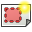
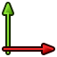

Comandi per categorie
Contents
- 1 Comandi per categorie
- 1.1 Misti
- 1.2 Menu File
- 1.3 Modifica
- 1.4 Visualizza
- 1.5 Strumenti
- 1.6 Macro
- 1.7 Finestre
- 1.8 Aiuto
- 1.9 Vista 3D
- 1.10 Ambiente Architettura
- 1.11 Ambiente Assemblaggio
- 1.12 Ambiente Completo
- 1.13 Ambiente Draft
- 1.14 Strumenti per disegnare oggetti
- 1.15 Strumenti per modificare gli oggetti
- 1.16 Altri strumenti di Draft
- 1.17 Ulteriori funzioni per Draft
- 1.18 Ambiente Drawing - Disegno di Proiezioni
- 1.19 Ambiente FEM
- 1.20 Ambiente Immagine
- 1.21 Ambiente Inspection
- 1.22 Ambiente Mesh
- 1.23 Ambiente OpenSCAD
- 1.24 Ambiente Parte
- 1.25 Ambiente PartDesign
- 1.26 Strumenti di costruzione
- 1.27 Strumenti di modifica
- 1.28 Strumenti di trasformazione
- 1.29 Ambiente Grafico
- 1.30 32px Ambiente Punti
- 1.31 Modulo Ray Tracing
- 1.32 Strumenti di progetto
- 1.33 Utilità
- 1.34 Ambiente Robot
- 1.35 Gestione Robot
- 1.36 Gestione Traiettorie
- 1.37 Ambiente Navale
- 1.38 Ship Design
- 1.39 Weights
- 1.40 Ambiente Schizzo
- 1.41 Geometria
- 1.42 Vincoli
- 1.43 Altri strumenti
- 1.44 Ambiente Foglio di calcolo
- 1.45 Strumenti
- 1.46 Formato dei file
- 1.47 Ambiente Start
- 1.48 Ambiente Test
- 1.49 Sito Web
- 1.50 Ancoraggio
- 1.51 Sulla radice dell'albero - ambiente Arch
- 1.52 Sulla radice dell'albero - ambienti vari
- 1.53 Su oggetto selezionato nell'albero - secondo gli ambienti - secondo l'oggetto
- 1.54 Su oggetto selezionato nella vista
- 1.55 Nell'area di lavoro libera - secondo gli ambienti - secondo l'oggetto
- 1.56 Finestra Aspetto - Tutti gli ambienti
- 1.57 Finestra Trasforma - Oggetto Arch
- 1.58 Finestra Trasforma - Oggetto Parte, PartDesign, Arch, ...
- 1.59 Architettura
- 1.60 Assemblaggio
- 1.61 Draft
- 1.62 Disegno
- 1.63 FEM
- 1.64 Immagine
- 1.65 Inspection
- 1.66 Mesh
- 1.67 OpenSCAD
- 1.68 Part
- 1.69 Part Design
- 1.70 Plot
- 1.71 Punti
- 1.72 Raytracing
- 1.73 Reverse Engineering
- 1.74 Robot
- 1.75 Ship
- 1.76 Schizzo
- 1.77 Foglio di Calcolo
- 1.78 Start
- 1.79 Test
- 1.80 Web
In questa pagina sono riuniti i comandi di FreeCAD suddivisi secondo il loro raggruppamento nei menu o negli ambienti di lavoro.
Consultare anche la Lista dei comandi, oppure, in originale la List of Commands.
Altri riferimenti ai comandi si trovano nel Progetto Qualità.
Inoltre è disponibile un elenco delle Icone e dei Pulsanti (per ora in inglese: Icon e Key)
Altre pagine che raggruppano la descrizione dei comandi:
Sezioni principali di questo documento:
Menu Principali e Generali
Misti
- Ambiente vedere anche Ambienti di lavoro
-
 Linea di comando
Linea di comando - Descrizione Modello comandi GUI
- Modello comandi GUI
- Selezionare
- Barra di stato
Modifica
-
 Annulla
Annulla -
 Ripristina
Ripristina -
 Taglia
Taglia -
 Copia
Copia -
 Incolla
Incolla - Duplica la selezione
-
 Aggiorna
Aggiorna -
 Box di selezione
Box di selezione - Seleziona tutto
-
 Elimina
Elimina - Posizionamento...
- Allineamento...
-
 Attiva o disattiva modalità modifica attiva o disattiva modalità modifica per gli oggetti selezionati. vedere anche Manipolatori
Attiva o disattiva modalità modifica attiva o disattiva modalità modifica per gli oggetti selezionati. vedere anche Manipolatori - Preferenze... vedere anche Impostare le preferenze
Visualizza
- Crea una nuova vista
-
 Vista ortografica
Vista ortografica -
 Vista in prospettiva
Vista in prospettiva - Viste standard
-
 Visualizza tutto
Visualizza tutto -
 Visualizza la selezione
Visualizza la selezione - Assonometrica
- Di fronte
-
 Destra
Destra -
 Dall'alto
Dall'alto -
 Dietro
Dietro -
 Sinistra
Sinistra -
 Dal basso
Dal basso -
 Ruota verso sinistra
Ruota verso sinistra -
 Ruota verso destra
Ruota verso destra
-
- Congela la visualizzazione
- Salva le viste...
- Carica le viste...
- Congela la vista
- Pulisci le viste
- Stereo
- rosso/verde
- quad buffer
- a righe interlacciate
- a colonne interlacciate
- Stereo Off
- Pubblica la posizione della camera
- Stile di disegno
- Come è
- Wireframe
- Zoom vedere anche Tipi di mouse
-
 In
In - Out
-
 Finestra (adatta al riquadro di selezione)
Finestra (adatta al riquadro di selezione)
-
- Finestra del documento
- Attiva/disattiva origine degli assi
- Piano di taglio
- Mappatura texture vedere Macro per mappare immagine e anche Vista texture
- Visibilità
- Nascondi/Mostra (commuta la visibilità della selezione) (stessa azione di "spazio")
- Mostra la selezione
- Nascondi la selezione
- Attiva/disattiva tutti gli oggetti (commuta la visibilità di tutti gli oggetti)
- Mostra tutti gli oggetti
- Nascondi tutti gli oggetti
- Attiva/disattiva selezionabilità
- Nascondi/Mostra (commuta la visibilità della selezione) (stessa azione di "spazio")
- * Attiva/disattiva modalità modifica vedere anche Manipolatori
- Aspetto...
- Modalità di visualizzazione
- Materiale
- Visualizzazione
- Dimensione punto
- Spessore linea
- Trasparenza
- Colore casuale
-
 Misura distanza
Misura distanza - Ambiente
- Nessuno
-
 Architettura
Architettura -
 Assemblaggio
Assemblaggio -
 Completo
Completo -
 Draft
Draft -
 Disegno
Disegno -
 Fem
Fem -
 Immagine
Immagine - Info
- Inspection
- Machining Distortion
- Mesh
-
 OpenSCAD
OpenSCAD -
 Parte
Parte -
 PartDesign
PartDesign -
 Grafico
Grafico - Punti
-
 Raytracing
Raytracing - Reverse Engineering
-
 Robot
Robot -
 Ship
Ship -
 Schizzo
Schizzo - Foglio di calcolo
-
 Start
Start - Test framework
-
 Web
Web
- Barre degli strumenti
- File
- Macro
- Vista
- Navigation
- Solidi
- Strumenti Parte
- Operazione booleana
- ...
- Viste
- Report
- Struttura
- Proprietà
- Selezione
- Vista combinata
- Console Python
- Barra di stato


Finestre
- Prossima
- Precedente
- Affianca
- A cascata
- Disponi icone
- Finestre
Aiuto
- 32px Aiuto in linea
-
 Sito di FreeCAD
Sito di FreeCAD -
 Documentazione utente
Documentazione utente - Documentazione sugli script python. Sito di FreeCAD
- Documentazione sui moduli python. Sito di Python
- Forum di FreeCAD
- FAQ su FreeCAD
-
 Informazioni su FreeCAD
Informazioni su FreeCAD -
 Cos'è questo?
Cos'è questo?
Obsolete
-
 Suggerimenti del giorno eliminato
Suggerimenti del giorno eliminato - Autotest... eliminato
- Informazioni su Qt eliminato
- 32px Sito Web di Python
- Aiuto online di Python
-
 Sito Web di aiuto online
Sito Web di aiuto online
Vista 3D
-
 Camera ortografica
Camera ortografica -
 Camera prospettiva
Camera prospettiva -
 Congela la vista
Congela la vista
- Salva le viste
- Carica le viste
- Congela la vista
- Pulisci le viste
- Ripristina la vista
- Piano di taglio
- Alterna visibilità
- Imposta aspetto
- Adatta la vista a tutto
- Adatta la vista alla selezione
- Finestra del documento
- Visualizza gli screenshot
- Crea vista
- Vista di esempio
- Vista Iv stereo
- Vista IvIssueCamPos
- * Zoom
- Finestra (adatta al riquadro di selezione)
Strumenti specifici dei singoli moduli
 Ambiente Architettura
Ambiente Architettura
Oltre agli strumenti del Modulo Draft sono attivi i seguenti strumenti specifici:
- Muro
-
 Elemento strutturale
Elemento strutturale -
 Armatura
Armatura -
 Cella OBSOLETO
Cella OBSOLETO -
 Piano
Piano -
 Edificio
Edificio -
 Sito
Sito - Finestra
-
 Piano di sezione
Piano di sezione -
 Sistema di assi
Sistema di assi -
 Tetto
Tetto -
 Spazio
Spazio -
 Scala
Scala
-
 Aggiungi
Aggiungi -
 Rimuovi
Rimuovi - Strumenti di conversione
-
 Dividi mesh
Dividi mesh -
 Da Mesh a Forma
Da Mesh a Forma - Seleziona i meshes non-solidi
-
 Rimuovi forma da Arch
Rimuovi forma da Arch -
 Chiudi aperture
Chiudi aperture - Merge Walls - Unisci i muri
-
- Strumenti di calcolo
Ambiente Assemblaggio
- Imposta vincolo assiale
Ambiente Completo
Riunisce una serie di comandi di ambienti specifici.
 Ambiente Draft
Ambiente Draft
Strumenti per disegnare oggetti
-
 Linea
Linea -
 DWire Polilinea
DWire Polilinea -
 Cerchio
Cerchio -
 Arco
Arco -
 Ellisse
Ellisse -
 Poligono
Poligono -
 Rettangolo
Rettangolo -
 Testo
Testo -
 Quota
Quota - B-Spline
-
 Punto
Punto -
 ShapeString
ShapeString -
 Facebinder
Facebinder


Strumenti per modificare gli oggetti
-
 Sposta
Sposta -
 Ruota
Ruota -
 Scosta Copia equidistante
Scosta Copia equidistante -
 Assembla
Assembla -
 Scomponi
Scomponi -
 Taglia/Estendi
Taglia/Estendi -
 Scala
Scala -
 Modifica
Modifica -
 Disegno
Disegno -
 Vista 2D
Vista 2D -
 Da Wire a BSpline
Da Wire a BSpline -
 Aggiungi punto
Aggiungi punto -
 Elimina punto
Elimina punto -
 Da Draft a Schizzo
Da Draft a Schizzo -
 Schiera
Schiera -
 Clona
Clona


Altri strumenti di Draft
- Strumenti di contesto
- Utilities
- Heal
- Strumenti polilinea
- Snapping
Ulteriori funzioni per Draft
Ambiente Drawing - Disegno di Proiezioni
-
 Apri SVG
Apri SVG -
 Nuovo Disegno A3
Nuovo Disegno A3 - Inserisci nuovo disegno
- A3 orizzontale
- A4 orizzontale
-
 Inserisci una vista
Inserisci una vista -
 Annotazione
Annotazione -  Clip
-
 Apri Browser
Apri Browser -
 Viste ortogonali
Viste ortogonali -
 Salva SVG
Salva SVG - Proietta le forme
 Ambiente FEM
Ambiente FEM
- Crea una mesh FEM
 Ambiente Immagine
Ambiente Immagine
- Apri il visualizzatore di immagini
- Crea un'immagine planare nello spazio 3D
Ambiente Inspection
- Visual inspection...
- Inspection...
 Ambiente Mesh
Ambiente Mesh
- Importa mesh
- Esporta mesh
- Crea una mesh da una forma
- Analizza
- Analizza e ripara
- Dettagli facce
- Dettagli curvatura
- Controlla la mesh del solido
- Dettagli sulle connessioni
- Armonizza le normali
- Inverti le normali
- Riempi i fori
- Chiudi il foro
- Rimuovi componente ...
- Rimuovi componente a mano ...
- Aggiungi triangolo
- Leviga ...
- Solido regolare
- Operazione booleana
- Unione
- Intersezione
- Differenza
- Seleziona mesh
- Taglia la mesh
- Dividi la mesh
- Crea un segmento
- Taglia la mesh
- Taglia la mesh con un piano
- Crea segmenti di mesh
- Colora curvatura
 Ambiente Parte
Ambiente Parte
-
 Importa CAD...
Importa CAD... - Esporta CAD...
-
 Prisma
Prisma -
 Cono
Cono -
 Cilindro
Cilindro -
 Sfera
Sfera -
 Toro
Toro -
 Crea primitive...
Crea primitive...
- Piano
- Cubo prisma a base rettangolare
- Cilindro
- Cono
- Sfera
- Ellissoide
- Toro
- Prisma con poligono di base a piacere
- Cuneo
- Elica
- Spirale
- Cerchio
- Ellisse
- Linea (Bordo)
- Punto (Vertice)
- Poligono regolare
-
 Generatore di forma...
Generatore di forma...
- Crea forma da Mesh...
- Converti in solido
- Affina una forma
- Crea una copia semplice
- Affinare una forma
- Controlla geometria
-
 Booleana
Booleana -
 Unione
Unione -
 Interseca
Interseca -
 Sottrai
Sottrai -
 Estrudi
Estrudi -
 Rivoluziona
Rivoluziona -
 Specchia
Specchia -
 Raccorda
Raccorda -
 Smussa
Smussa -
 Superficie rigata
Superficie rigata -
 Loft
Loft -
 Sweep
Sweep -
 Offset...
Offset... -
 Spessore...
Spessore... -
 Seziona
Seziona -
 Sezioni...
Sezioni... - Make Compound - Crea un composto
Ambiente PartDesign
Oltre agli strumenti del Ambiente Schizzo sono attivi i seguenti strumenti:
Strumenti di costruzione
Strumenti di modifica
Strumenti di trasformazione
Ambiente Grafico
-
 Salva grafico
Salva grafico -  Assi vedere Guida base
-
 Serie vedere Guida base
Serie vedere Guida base -
 Griglia vedere Guida base
Griglia vedere Guida base -
 Legenda vedere Guida base
Legenda vedere Guida base -
 Etichette vedere Guida base
Etichette vedere Guida base -
 Posizioni vedere Guida base
Posizioni vedere Guida base


{kind=link}
{kind=link}
{kind=link}
{kind=link}
{kind=link}
{kind=link}
{kind=link}
{kind=link}
{kind=link}
{kind=link}
{kind=link}
{kind=link}
{kind=link}
{kind=link}
{kind=link}
{kind=link}
{kind=link}
32px Ambiente Punti
{kind=link}
- Test
- Trasforma punti
- Importa punti
- Esporta punti
- Taglia nuvola di punti
 Modulo Ray Tracing
Modulo Ray Tracing
{kind=link}
{kind=link}
{kind=link}
 Ambiente Robot
Ambiente Robot
Gestione Robot
-
 Inserisci un robot
Inserisci un robot -
 Simula una traiettoria
Simula una traiettoria -
 Esporta una traiettoria
Esporta una traiettoria -
 Imposta la posizione iniziale
Imposta la posizione iniziale -
 Ripristina la posizione iniziale
Ripristina la posizione iniziale
Gestione Traiettorie
strumenti non parametrici
-
 Crea una traiettoria
Crea una traiettoria -
 Imposta l'orientamento
Imposta l'orientamento - Imposta i parametri di default
-
 Inserisci la posizione
Inserisci la posizione -
 Inserisci il punto
Inserisci il punto
{kind=link}
strumenti parametrici
{kind=link}
{kind=link}
Ambiente Schizzo
{kind=link}
Geometria
-
 Punto
Punto -
 Arco
Arco -
 Circonferenza
Circonferenza -
 Linea tra 2 punti
Linea tra 2 punti -
 Polilinea
Polilinea -
 Rettangolo
Rettangolo -
 Raccorda
Raccorda -
 Rifila
Rifila -
 Geometria esterna
Geometria esterna -
 Linea di costruzione
Linea di costruzione
Vincoli
-
 Bloccato
Bloccato -
 Coincidente
Coincidente -
 Punto su oggetto
Punto su oggetto -
 Distanza orizzontale
Distanza orizzontale -
 Distanza verticale
Distanza verticale -
 Verticale
Verticale -
 Orizzontale
Orizzontale -
 Lunghezza
Lunghezza -
 Raggio
Raggio -
 Parallela
Parallela -
 Perpendicolare
Perpendicolare -
 Angolo interno
Angolo interno -
 Tangente
Tangente -
 Uguaglianza
Uguaglianza -
 Simmetria
Simmetria
Altri strumenti
Ambiente Foglio di calcolo
Strumenti
Formato dei file
Ambiente Start
- Iniziare un nuovo progetto
- Per iniziare
- Progettazione di parti
- Progettazione architettonica
- Progettazione navale
- Lavorare con le mesh
- Ambiente FreeCAD completo
- Sul Web
- Progetti di esempio
- File Schenkel Step
- Esempio di Part Design
- Esempio di disegno estratto
- Esempio di simulazione di Robot
- Esempio di disegno architettonico
- Ultimi video
- File recenti
- Ultime notizie
Ambiente Test
- Autotest
- Tutti i test contemporaneamente
- Testa il documento
- Testa le funzioni di base di FreeCAD
- Test Commands
- ...
- Inventor view
Sito Web
collegamento a freecadweb.org
Utilità di Vari Ambienti
-
 Piano di lavoro
Piano di lavoro -
 Termina
Termina -
 Chiudi
Chiudi -
 Annulla
Annulla -
 Modalità Costruzione
Modalità Costruzione -
 Modalità Continua costruzione
Modalità Continua costruzione -
 Applica stile
Applica stile -
 Visualizzazione
Visualizzazione -
 Aggiungi al gruppo nota: da migliorare
Aggiungi al gruppo nota: da migliorare -
 Seleziona il contenuto del gruppo
Seleziona il contenuto del gruppo
Ancoraggio
Per tutte le funzioni di ancoraggio vedere Ancorare
{kind=link}
{kind=link}
{kind=link}
Menu contestuali e menu delle finestre
Sulla radice dell'albero - ambiente Arch
Menu contestuale sulla radice del documento
- Strumenti contestuali di Draft
- Applica stile corrente vedere anche Stile della linea
- Attiva disattiva la modalità di visualizzazione
- Aggiungere al gruppo...
- Selezionare gruppo
- Seleziona piano
- Attiva/disattiva snap
- Mostra barra snap
- Attiva/disattiva griglia
- Annulla l'ultimo segmento - vedere anche Polilinea
- Termina la linea vedere anche Polilinea
- Chiudi la linea vedere anche Polilinea
-
- Crea gruppo
- Attiva documento
Sulla radice dell'albero - ambienti vari
- Crea gruppo
- Attiva documento
Su oggetto selezionato nell'albero - secondo gli ambienti - secondo l'oggetto
Menu contestuale su un ramo del documento
- Trasforma, oppure Modifica Sketch, oppure ...
- Imposta colori...
- Nascondi/Mostra (commuta visibilità) (stessa azione di "spazio")
- Mostra la selezione
- Nascondi la selezione
- Attiva/disattiva selezionabilità
- Aspetto...
- Modalità di visualizzazione
- Materiale
- Visualizzazione
- Dimensione punto
- Dimensione linea
- Trasparenza
- Colore casuale
- Elimina
- Draft context tools
- Applica stile corrente vedere anche Stile della linea
- Attiva disattiva la modalità di visualizzazione
- Aggiungere al gruppo...
- Selezionare gruppo
- Seleziona piano
- Attiva/disattiva snap
- Mostra barra snap
- Attiva/disattiva griglia
- Annulla l'ultimo segmento - vedere anche Polilinea
- Termina la linea vedere anche Polilinea
- Chiudi la linea vedere anche Polilinea
-
Oppure
- Display option
- Rinomina
- Attiva documento
Su oggetto selezionato nella vista
Menu contestuale su un oggetto nella vista
- Visualizza tutto
- Visualizza la selezione
- Viste standard
- Assonometrica
- Di fronte
- Destra
- Dall'alto
- Dietro
- Sinistra
- Dal basso
- Ruota verso sinistra
- Ruota verso destra
-
- Finestra del documento
- Aspetto...
- Nascondi (commuta visibilità) (stessa azione di "spazio")
- Attiva/disattiva selezionabilità
- Vai alla selezione
- Colore casuale
- Elimina
- Menu contestuale di Draft
- Applica stile corrente vedere anche Stile della linea
- Attiva disattiva la modalità di visualizzazione
- Aggiungere al gruppo...
- Selezionare gruppo
- Seleziona piano
- Attiva/disattiva snap
- Mostra barra snap
- Attiva/disattiva griglia
- Annulla l'ultimo segmento - vedere anche Polilinea
- Termina la linea vedere anche Polilinea
- Chiudi la linea vedere anche Polilinea
-
Oppure
Nell'area di lavoro libera - secondo gli ambienti - secondo l'oggetto
Menu contestuale su area vuota dello schermo
- Visualizza tutto
- Visualizza la selezione
- Viste standard
- Assonometrica
- Di fronte
- Destra
- Dall'alto
- Dietro
- Sinistra
- Dal basso
- Ruota verso sinistra
- Ruota verso destra
-
- Finestra del documento
- Draft context tools
- Applica stile corrente vedere anche Stile della linea
- Attiva disattiva la modalità di visualizzazione
- Aggiungere al gruppo...
- Selezionare gruppo
- Seleziona piano
- Attiva/disattiva snap
- Mostra barra snap
- Attiva/disattiva griglia
- Annulla l'ultimo segmento - vedere anche Polilinea
- Termina la linea vedere anche Polilinea
- Chiudi la linea vedere anche Polilinea
-
Oppure
- Draft (strumenti di Draft)
- Stili di navigazione
Finestra Aspetto - Tutti gli ambienti
Finestra Trasforma - Oggetto Arch
Finestra Trasforma - Oggetto Parte, PartDesign, Arch, ...
Azione Trasforma del modulo Parte
Architettura
- Vista
- Dati
- Esempio per un muro
- ....
Assemblaggio
- Vista
- ...
- Dati
- ...
Draft
- Vista
- Dati
- Esempio per una linea
Disegno
Pagina
- Vista
- Offset X
- Offset Y
- Scala
- Dati
- Elementi della tabella modificabili
- Percorso della pagina (temp)
- Modello di squadratura utilizzato
Annotazione
- Vista
- Dati
- Tipo di carattere, Rotazione, Scala, Testo, Colore, Posizione
FEM
- Vista
- ...
- Dati
- ...
Immagine
- Vista
- ...
- Dati
- Posizione
- Percorso
- Dimensioni X e Y
Inspection
- Vista
- ...
- Dati
- ...
Mesh
- Vista
- ...
- Dati
- Mesh
- Punti
- Spigoli
- Facce
- Mesh
OpenSCAD
- Vista
- Dati
- Mesh
- Punti
- Spigoli
- Facce
- Mesh
Part
- Vista
- Dati
Part Design
Plot
- Vista
- ...
- Dati
- ...
Punti
- Vista
- ...
- Dati
- ...
Raytracing
- Vista
- ...
- Dati
- ...
Reverse Engineering
- Vista
- ...
- Dati
- ...
Robot
- Vista
- ...
- Dati
- ...
Ship
- Vista
- ...
- Dati
- ...
Schizzo
- Vista
- ...
- Dati
- ...
Foglio di Calcolo
- Vista
- ...
- Dati
- ...
Start
Test
- Vista
- ...
- Dati
- ...
Web
....
</div>